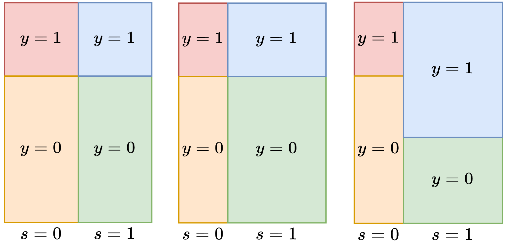
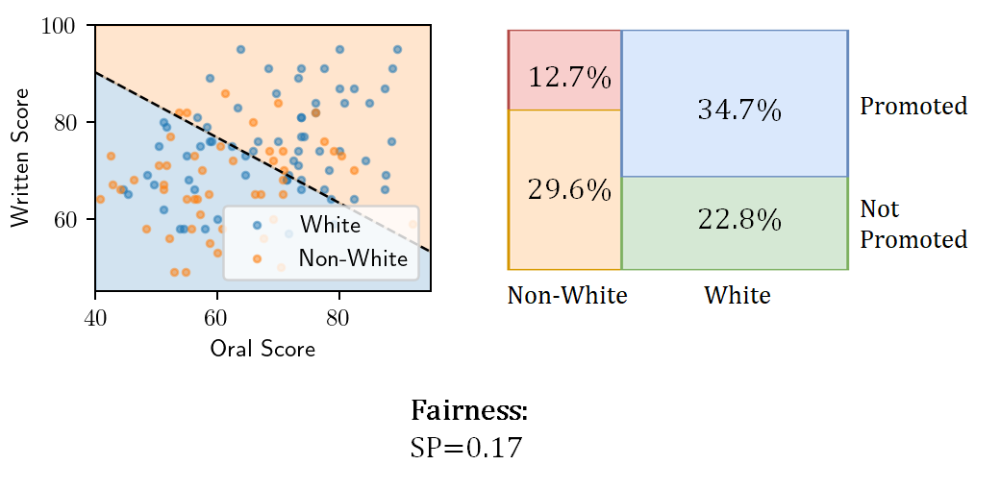
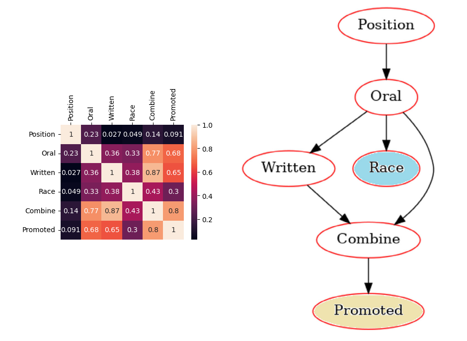
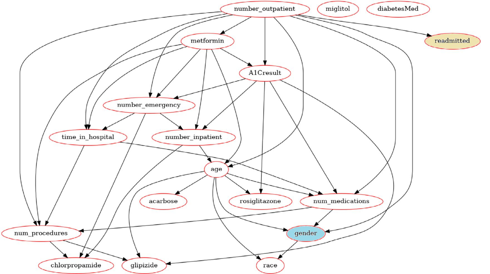
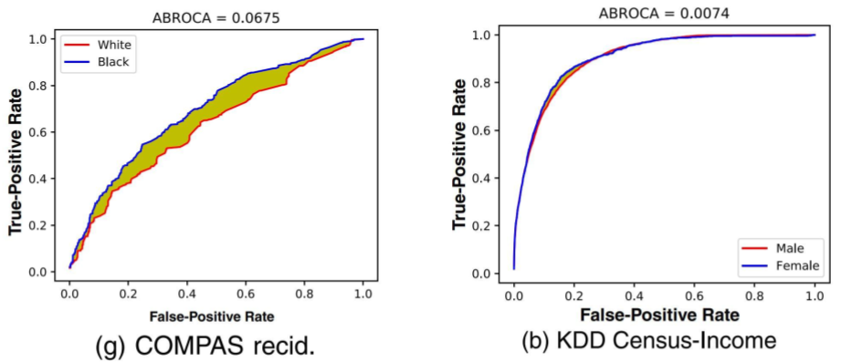
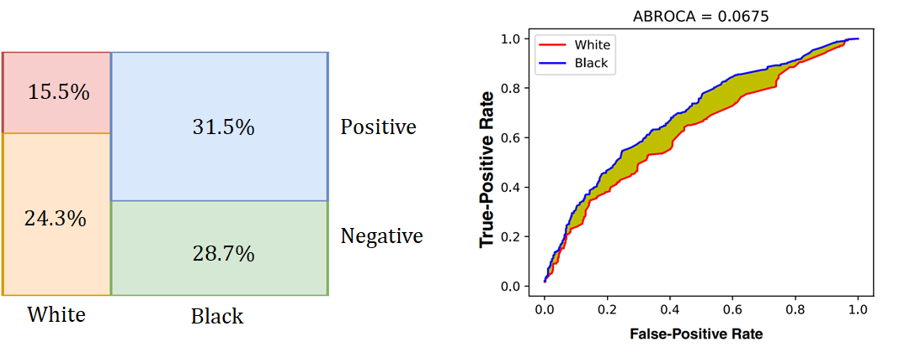

A survey on datasets for fairness-aware machine learning¶
Three ways to intervene in the name of fairness¶
Interventions in the original data
Class modification
Sampling
Change the learning algorithm
Regularization
Incorporate fairness into objective function
Post processing of the model outputs
Move decision boundary
Cascade fair classifier with black box model
Caveats¶
We will only explore tabular data
We will use a Bayesian network (BN) to explore the relationships between features
All numerical features will be discretized to make them categorical
Most BN algorithms cannot efficiently handle numeric features
We will examine relationships between specific, categorical features. Examples:
\(A_1 = \text{sex} \in \{M,F\}\)
\(A_2 = \text{race} \in \{\text{white},\text{nonwhite}\}\)
\(A_3 = \text{race} \in \{\text{white}, \text{black}, \text{asian-pac-islander}, \text{amer-indian}, \text{other}\}\)
\(A_4 = \text{age} \in \{ 17, 18, \dots, 90 \}\)
\(A_5 = \text{age} \in \{ 0, \dots, 255 \}\)
\(A_6 = \text{age} \in \{ 25-60, <25, >60 \}\)
Overview of Datasets¶
Fifteen datasets total. Five representative shown below.
Dataset |
Attributes (cat/bin/num) |
Domain |
Class Ratio |
Protected Attributes |
Target |
|---|---|---|---|---|---|
KDD Census-Income |
32/2/7 |
Finance |
1:15.3 |
Sex, race |
Income |
Ricci |
0/3/3 |
Society |
1:1.1 |
Race |
Promotion |
COMPAS Recid. |
31/6/14 |
Criminology |
1:1.2 |
Race, sex |
Two-year recidivism |
Diabetes |
33/7/10 |
Healthcare |
1:3.1 |
Gender |
Readmit in 30 days |
Student-Mathematics |
4/13/16 |
Education |
1:2.0 |
Sex, age |
Final grade |
Ricci v. DeStefano¶
Firefighter promotions determined by result of exam
Mostly whites passed exam
Few black firefighters passed exam
Supreme court ruled that ignoring the exam violates 1964 civil rights act
Attribute |
Values |
Description |
|---|---|---|
Position |
{Lieutenant,Captain} |
Desired promotion |
Race |
{White, Non-White} |
Self identified race |
Written |
[46-95] |
Written exam score |
Oral |
[40.83-92.8] |
Oral exam score |
Combined |
[45.93-92.8] |
0.6 *written + 0.4*oral |
Promoted |
{True,False} |
Whether a promotion was obtained |

Statistical parity score¶
\(s\) is the protected group and \(\bar s\) is the unprotected group
\(\text{SP}=0\) occurs when there is no discrimination
\(\text{SP}\in (0,1]\) occurs when the protected group is discriminated against
\(\text{SP}\in [-1,0)\) occurs when the unprotected group is discriminated against
Use logistic regression model to get a baseline fairness scores for each dataset.

Bayesian network structure learning¶
The structure of the network \(\scr{M}\) should maximize the likelihood of generating the dataset \(\cal{D}\)
Regularize the parameters of the network \(\widehat{\scr{M}}\) (i.e. the edges of the graph)
Ensure that the protected attribute \(y\) is a leaf node
Optimization completed using the pomegranate software
Exact and approximate algorithms are available
All of the datasets used are small enough to use exact algorithms


Balanced Accuracy¶
Student: |
94% Acc. |
93% Balanced |
KDD Income: |
94% Acc. |
60% Balanced |
|---|---|---|---|---|---|
Sex |
Passing Grade |
Failing grade |
Sex |
Low income |
High income |
Male |
33.7% |
19.0% |
Male |
1.3% |
50.7% |
Female |
33.3% |
13.9% |
Female |
4.8% |
43.2% |
Equalized odds¶
Equalized odds is preserved when the predictions \(\hat y\) conditional on the ground truth \(y\) are equal for both groups (\(s\) and \(\bar s\)).
Degree of equalized odds violation \(EO\in[0,2]\)
\(\text{EO}=0\) occurs when there is no discrimination
\(\text{EO}=2\) indicates the maximum discrimination
Between-ROC Area¶
Measure the divergence between ROC curves for protected and non-protected groups
Integrate over all possible decision threshold \(t\in[0,1]\)
\(\text{ABROCA}\in[0,1]\)
\(\text{ABROCA} = 0\) is a perfectly fair model
\(\text{ABROCA} = 1\) is the most unfair model

How can a model discrimintate against both classes simultaneously?¶
Dataset |
Protected Attribute |
Group Distribution |
Accuracy |
Balanced Accuracy |
Statistical Parity |
Equalized Odds |
ABROCA |
|---|---|---|---|---|---|---|---|
COMPAS Recid. |
Race |
[31.5, 28.7, 15.5, 24.3] |
0.6414 |
0.6299 |
-0.3398 |
0.6452 |
0.0675 |
A: Data are heavily imbalanced towards the protected class

Summary: accuracy, balance, fairness¶
Dataset |
Protected Attribute |
Group Distribution (%) |
Accuracy |
Balanced Accuracy |
Statistical Parity |
Equalized Odds |
ABROCA |
|---|---|---|---|---|---|---|---|
Ricci |
Race |
[12.7, 29.7, 34.7, 22.9] |
N/A |
N/A |
0.1714 |
N/A |
N/A |
COMPAS Recid. |
Race |
[31.5, 28.7, 15.5, 24.3] |
0.6414 |
0.6299 |
-0.3398 |
0.6452 |
0.0675 |
KDD Census-Income |
Sex |
[1.3, 50.7, 4.8, 43.2] |
0.9474 |
0.6031 |
0.0198 |
0.0403 |
0.0074 |
Diabetes |
Gender |
[11.1, 34.1, 13.1, 41.7] |
0.7584 |
0.5 |
N/A |
N/A |
0.0189 |